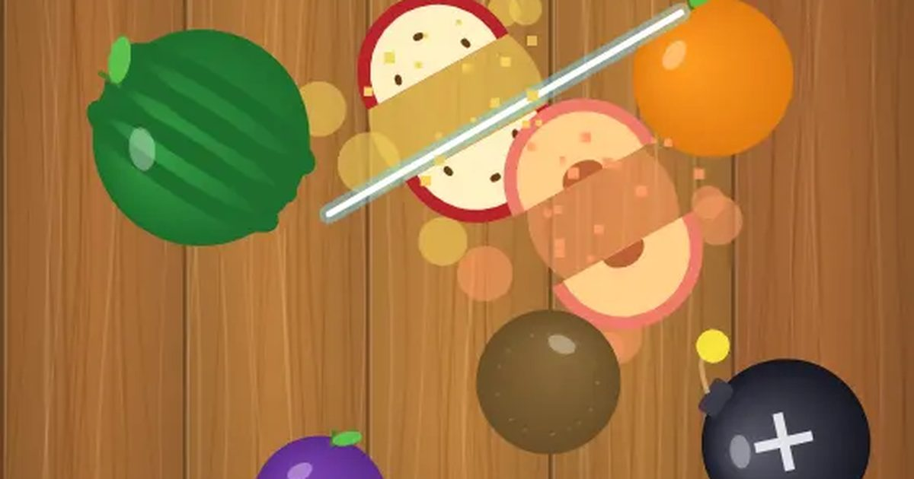

과일 베기
Fruit Slash
베기 · 손맛무료설치 없음폰 · PC
▶ 지금 바로 하기로그인 없이 브라우저에서 바로 시작돼요
어떤 게임인가요?
튀어 오르는 과일을 손가락으로 쓱 그어 썰어요! 한 번에 여러 개 썰면 콤보, 폭탄은 절대 건드리지 마세요.
목표 · 튀어 오르는 과일을 손가락으로 그어 썰고, 폭탄은 피해서 최고 점수를 노리세요.
이렇게도 찾아요
과일 자르기칼질 게임과일 썰기fruit slicefruit cutting gameslice game
#과일베기 #과일자르기 #손맛게임
게임 방법
- 화면을 빠르게 그으면 칼날 자국이 지나간 과일이 반으로 썰려요. 과일 하나에 1점.
- 한 번 그을 때 3개 이상 썰면 썬 개수만큼 콤보 보너스.
- 클래식: 과일을 바닥으로 3개 놓치거나 폭탄을 베면 끝.
- 60초: 시간 안에 최대한 많이 썰기. 폭탄을 베면 -10점.
- 파란 얼음 과일을 썰면 4초 동안 시간이 느려져요.
- 금색 별 과일은 +5점, 양옆에서 과일이 쏟아지는 과일 폭풍!
등장하는 것들
- 수박 · 귤 · 사과 · 키위… · 1점
- 얼음 과일 · 시간 느리게
- 별 과일 · +5 · 과일 폭풍
- 폭탄 · 베면 끝 (60초는 -10)
공략 팁
- 과일이 꼭대기에서 멈칫할 때 한 줄로 모아 그으면 콤보.
- 폭탄 옆 과일은 폭탄을 피해 휘어지게 그으세요.
- 손가락을 떼지 말고 계속 그어도 돼요.
이런 게임도 있어요
 지뢰찾기퍼즐 · 추리
지뢰찾기퍼즐 · 추리 십장생 짝맞추기짝맞추기 · 두 번 꺾어 잇기
십장생 짝맞추기짝맞추기 · 두 번 꺾어 잇기 제기차기타이밍 · 한 손
제기차기타이밍 · 한 손 필살 격투격투 · 1P/2P
필살 격투격투 · 1P/2P 반응속도 테스트측정 · 반사신경 · 1분
반응속도 테스트측정 · 반사신경 · 1분 글 타자 · 타자 빨리 치기타자 연습 · 문장
글 타자 · 타자 빨리 치기타자 연습 · 문장